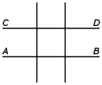

Беседа 2608 от 3877 · Беинса Дуно
Плосък и объл говор
Отче наш.
Имате ли тема? – (Не.) – Пишете тогава: „Причини за погрешките“.
Ще се спра върху плосък и объл говор, плоска реч и обла реч. Един предмет интересен за човека всякога. От гласа на човека зависят много работи. Мощното в природата и онова, което сближава хората, то е звукът. Има звукове, които са разумни, има звукове, които не са разумни. Сега ако някой би ви задал темата: „Отношението на правите и кривите линии“, какво бихте казали? Да определите що е кривата линия. Тогаз аз бих дал такова едно определение: Кривата линия е тази, която има еднакво отношение към правите линии, но правите линии, които изхождат от един център. Онази линия, която има еднакво отношение към всичките прави е крива линия. То сега е едно философско определение. Що са правите линии? Що е правата линия? – Правата линия всякога има отношение към две точки. Правата линия е само онази, която има отношение към две точки. Крива линия е онази, която има отношение към правите линии. Може да вземете и определението, което съществува и в геометрията. Тук аз давам друг характер на определението, разумен характер. Една крива линия, за да има отношение към всичките прави линии е разумна линия. Една права линия, която има отношение към две точки е разумна линия. Защото линията на поведението, това е един резултат, една действуваща разумна сила. И следователно, ние изучаваме резултатите като механически процеси.
Но сега е въпросът за човешкия глас, за звуковете. Някои път вие се оплаквате, че не ви обичат хората. Причината е просто вашият глас. Някои хора като говорят, просто дразнят. Гласът им е плосък. За плоския глас причината е стомахът. Той образува онези, плоските гласове. Защото всякога когато човек преглъща, затваря това, горното гърло и тогава гласът става плосък. Плоският глас е причина за омразата. Гласът е резултат на омразата, завистта, самолюбието, тщеславието, на всички отрицателни черти. Всичките хора, които имат тия недъзи, имат плосък глас. А облият глас на човека се дължи на онова хубавото, красивото, на доброто в човека. Облият глас е на доброто, плоският глас е на злото. Не че плоският глас е лош. Но дразни плоският глас. Плоският глас има допирни точки с всички отрицателни черти; облият глас има допирни точки с всички добри черти. Следователно, трябва да станете добри. Вие сте добри, но ако искате доброто във вас да спомага на вас да развива гласа, объл глас ви трябва. Сега вие някой път като говорите не се слушате. Като говориш, в говора си трябва да се слушаш, ти като говориш сам трябва да се слушаш, приятно да ти е това, което говориш. Ти говориш, ама не слушаш какво говориш. Всичката погрешка е там. Така че ние говорим без да се слушаме, другите ни слушат и другите говорят, че не се слушат, ние ги слушаме. Следствие на това в плоския глас има едно кряскане. Никой не слуша. Учителят говори на учениците, кряска. В плоският глас има едно непослушание. Сега плоският глас Бог го е дал като една вътрешна сила. Откакто е започнал разумният глас, не е отдавна, когато той започнал. Всичките тия зверове хиляди и милиони години се са кряскали. Има звук в тях. Какъв е техният звук? Много плосък. Плоският глас всява ужас, трепет. Той не е онова, което вдъхва вяра, надежда. Сега вие ще дойдете да кажете: „Така сме родени“. Аз не отричам, че тъй сте родени. Ще кажеш, че майка ти родила те такъв. Казват, че Господ създал света. Ако хората сега излизаха от Неговите ръце, те никога не биха имали този глас. Но понеже тепърва ще минат през Божиите ръце, Бог сега иде в света. Или хората се приближават до Бога, за да изправят своя глас. Хубаво, във вас ще се зароди въпроса, как да се изправи. И туй е закона. Ще се научите вие да концентрирате вашето гърло, горното гърло. Когато ще се храните, да не бързате да ядете, ами съзнателно да се храните. Че когато се храните да имате предвид да отворите малко горното гърло, да го държите отворено. Когато говорите, някой път държите горното гърло стиснато. Речете да преглътнете, започнете да пеете, да видим какъв ще бъде гласът. Отворете горното гърло. В облият глас има нещо привлекателно, той действува успокоително. Всичките хора, които имат плосък глас са нервни, неспокойни, дразнят се, сърдят се. Започнете тогава с гласа си. Направете си гласа объл. Веднага тия качества ще дойдат в тебе, ти ще бъдеш разположен духом, приятно ще ти бъде, времето ще бъде хубаво, вярата ще започне да се усилва. Сега казано научно, вярата ще усили облия глас, надеждата ще усили облия глас, разумността ще усили облия глас. Ако вие с един плосък глас мислите да бъдете добре, то няма условия. Ако на едно съвременно общество вие излезете да пеете с плосък глас, то ще ви изпрати с дюдюкане. Да кажем вие се упражнявате. Всички най-добри певци са имали объл глас. Щом човек има объл глас, той е добър. Щом има плосък глас, има нещо в него отрицателно. Не че е лошо. Аз не поддържам, че е лошо, но има нещо в него недоразвито. Дето някой път вие не се търпите, гласовете не са обли. Вие не може да търпите някои хора, не искате да ви говорят. Или дойде някой ваш слуга, не може да го търпите, защо? – Защото гласът му е плосък. Дойде някой човек с музикален глас, с объл глас, вие искате по-дълго време да ви говори. Вие ще кажете: „Той Любов има“. Вие злоупотребявате с Любовта. Да те слуша той, трябва и ти с Любов да говориш. Щом гласът е объл, Любовта в тебе се изразява; щом гласът е плосък, Любовта в тебе не се изразява както трябва. (Една котка мина край Учителя.) Тя показва, че вие сте добри хора, за вас има бъдеще, тя казва: „А за нас, котките, докато дойдем до вашето положение, много хляб има да ядем. Много време има да мечим“. Меченето ни най-малко не е объл глас. Много плосък глас е. Лаенето на кучето е плосък глас. Реването на кравата е плосък глас. Едва човек започва да получава облия глас. (Учителят издава глас, като когато човек е прегракнал. После пее много нежно) Като слушате второто пеене, вас ви е приятно, а като слушате първото, не ви е приятно. Не че това не е хубаво. В природата има всичките чешити, колкото искаш. Казвам: Когато пеете или когато говорите ще се слушате. Като почнете да се упражнявате в пеене, най-първо задържайте гласа си пет секунди, после десет секунди, 15, 20, 25, 30, 35, 40, 45, 50, 55, 60, дойдете ли до 60 секунди спри там. Ти като дойдеш да задържиш 60 секунди, вие ще имате достатъчно в себе си търпение, разсъждение, мисълта ще бъде концентрирана. Сега ще кажете: „Ние сме остарели да мислим за небето“. Знаете ли какво нещо е онзи свят? Небето е тук, на земята. Вие казвате: „В небето да идем“. Вие сега живеете в небето, не го разбирате. Ако вие сте в небето като тази котка и когато минавате покрай краката на ангелите, поглаждате се, те седят учат, а вие само си мърдате опашката. Аз наричам опашката, това са ненужни желания, които човек поддържа: това му трябва, онова му трябва, всичко туй. Котката е потребно да си мърда опашката. Аз виждам, на котката е потребна опашката, защо? Всяко животно, което си мърда опашката е здраво; всяко животно, което не си мърда опашката е болно. Щом си подвие опашката или е болно, или се изпоплашило, или е неразположено. И на човека неговата опашка е носът, да я пипне. И тогава да си бута и ухото. Защо ви е дал Господ ухото? Само лошото ли да слушате, само плоските гласове ли да слушате. Да слушате и облия глас. Представете си, че вие при Господа ще идете, какво ще говорите на Господа? Как ще се молиш, как ще четеш „Отче наш“? (Учителят чете, както го четат певците в църквите.) Кой ще те слуша, я ми кажете? Когато човек пее плоско, той не е сериозен. (Учителят чете „Отче наш“ много нежно) Умът да е турен, също един музикален глас. Ти като чуеш, да ти е приятно, като че някое друго лице, като че някой ангел ти говори. Турете ума си когато пеете. От разумното ще се водите. Вие искате понякой път да пеете. Аз не искам да излизате на сцената. Певци станете за себе си. С един музикален глас ако сте, вие ще си причините голямо благо. Сега, понеже ще пеете, да вземете мотото: „Мога да кажа, че слънцето утре ще изгрее и на земята лицето ще огрее. Топлина ще внесе за всичко що расте, всичко живо ще стане и за работа ще се хване. Грей мощно слънце, да учим ний добре!“ Сега при пеенето има практически методи за гласа. Всичко може да се оправи. Понякой път седите и мислите за празни работи. Плоският глас той се е образувал от болестите, от страданията, от несгодите на сиромашията, от нямането. Човек, който закъсал отвсякъде, той има плосък глас. Човек, на който започват да се уреждат работите, гласът му започва да става объл. Ония хора, които ги обичат, имат музикален глас. Всички трябва да се стремите към музикалния глас. Невидимият свят, разумният свят обичат музикалния глас. Като изкажеш нещо, сам да си доволен от себе си.
Та казвам сега: Ще гледате да се освободите от плоския глас и да развиете във вас облия глас, понеже облият глас е магнетичен. Той в себе си носи нещо хубаво. Ще се спреш в своите мускули, ще пипнеш гърлото. Като опипаш, ще благодариш на Господа, ще кажеш: „Благодаря Ти Господи, за онова, което си ми дал тук (Учителят посочва гърлото), помогни ми сега за да може да се развие гласът ми, да стане музикален.“ Някой път казваме: „Трябва да имаме хубав, сладък глас“. Облият глас има всичките качества.
Питам: Вие как бихте изпели „Мога да кажа, че утре слънцето ще изгрей“? По плосък начин може да го изпеете, но с облия глас как ще го изпеете. Хубавите песни имат съвсем друг ритъм. Хубавите, красивите, съдържателните песни в тях иде облият глас, съдържателния глас. Те имат друго съдържание. Има песни, които не са хубави, те са плоски, и гласът е плосък, нямат изражение. И в природата обло е това, което най-лесно се справя с мъчнотиите. Облият глас най-лесно се справя с мъчнотиите. Плоският глас най-мъчно се справя. Разумният човек лесно се справя с мъчнотиите; онзи, който не е разумен, мъчно се справя. Понеже за да се справиш, ти трябва да знаеш откъде да започнеш.

Имате две успоредни линии AB и CD (Фиг. 1). Ако умножите тия линии по две, колко дават. 2 по 2 е 4, нали? Геометрически как ще имате другите две линии. Те ще бъдат във вертикално направление. Значи две по две е четири. Другите две линии и те са успоредни. Първите са основните линии. Щом се умножат, имаме други две линии, които са пак успоредни, но са перпендикулярни на другите две. Вторите и те са успоредни помежду си. Следователно, когато във висшата разумна математика, когато се умножават две успоредни линии, в света се образува един квадрат. А квадратът е вече основа на дома. Първите две успоредни линии са бащата и майката, другите две са братът и сестрата. Братът и сестрата вървят успоредно, както вървят бащата и майката. Следователно, да допуснем в един дом, че бащата и майката вървят успоредно, а сестрата и братът не вървят. Тогава те не са умножени. Те са само събрани. Но този закон е изключителен: „Две по две е четири и две и две е четири“. То е верно тогава: събирането и умножението върви. Щом дойде 3 по 3 имаме 9; а 3 и 3 е 6. Следователно 3 единици липсват. Сега законът, по който математиците обясняват на физическото поле, друго обясняват. Той е верен, но щом влезете в един свят с повече измерения, отношенията на хората вече са други. Кога ще бъдете вие успоредни? Ако да кажем вашия глас не отговаря на вашата мисъл, тогава гласът не е успореден. Защото ония трептения на мисълта, ако не се подават на вашия ларинкс, и ако този ларинкс не е отзвук на вашата мисъл, не само да дадете израз на онова, което мислите, но да дадете съответствуващ тон, съответствуващи трептения. И тия трептения по какво се отличават?
Представете си един малък пример: В далечното минало един приятел на един цар пратил своя слуга да занесе на една табла череши и преброил черешите и нищо не казал на слугата. Обаче, слугата като вървял, бръкнал и изял една череша. Отишъл при царя и царят преброил черешите и намерил, че черешите са нечетни. Върнал го и казал: „Аз нечетни череши не ям“. Де е погрешката, в господаря или в слугата? Вие ще кажете: „Погрешката не е голяма“. Но царят четни череши яде, нечетни – не яде. Питам: Какъв трябва да бъде вашият глас – четен или нечетен? Четен трябва да бъде. Щом ще дойде един слуга и ще изяде една череша, ще развали работата. Царят не обича нечетни череши да яде. Връща го при господаря му. Слугата отива при господаря си и казва: „Каза ми царят, че нечетни череши не яде, яде четни“. Той не казал нищо на слугата. Отишъл, че набрал други череши, турил ги на таблата и пак пратил слугата си да ги занесе. Слугата не знае, че господят пак ги чел, но сега ги изпратил нечетни. По-напред турил четни, а сега турил нечетни. Слугата като вървял, пак казал: „Чакай да ги опитам“ и пак взел една череша. Царят приел черешите, понеже ги намерил четни. Питам: Къде е погрешката? Слугата прави нещата четни и нечетни. Той прави четното нечетно и нечетното четно. Царят не знае нищо. Погрешката къде е. Той мисли, че погрешката е в неговия приятел, а неговият приятел знае, че погрешката е в слугата. Тогава не му казва: „Как смееш да изядеш една череша!“ Казва: Няма нищо, щом иска четни, той туря нечетни, слугата взима една череша и без да знае слугата поправя своята погрешка.
Та ви казвам: Понеже вие сте развалили гласа, понеже вие сте носили черешите на царя, то като слуга сте изяли една череша. Не е голяма погрешката, но така се образува плоският глас от нечетно число. Сега ви връща вашият приятел при царя, който турил плоския глас, та слугата като върви по пътя, ще го направи объл. Той като изяде една череша, развали гласа и понеже гласът е развален, втория път без да знае ще поправи гласа.
Вие отивате при Бога и носите плосък глас, нечетен. Господ казва: „С този глас в Царството Божие не можете да влезете!“ Да ви кажа: Ако вие идете с плосък глас в Царството Божие, ще ви върнат и ще ви кажат – „С плосък глас човек не може да влезе“. Няма да ви кажат, че не знаете да пеете. Казват: „Още не сте за това училище, да вървите в света да се упражнявате“. Ще ви турят на изпит и ще ви дадат какво да учите. Има много предмети да учите, не мислете, че това е единственото. Гласът той е свързан с много други предмети, които трябва да се проучват. Но засега две неща ви са потребни. Някой път вие сте неразположен, болен сте, попейте си. Виж как ще пееш. Ама как ще пееш. Боли те крака. Започни да му пееш. И вие пеете: „Оле, оле, олеле, ох“. И вие пеете, но то е плосък глас. Пей: „Колко си хубав, откакто си дошъл, колко добро си ми направил. О, крачка, едно време можах много добре да живея. Сега всичко добре разбирам“. (Това Учителят го пее) Пейте. Вие ще кажете сега: „Туй ли ни остава сега да пеем?“ – Ами туй ли ви остана цял ден да ходите от къща на къща и да носите телеграми? Кореспонденти на в-к Таймс. Ще информират нещо плоско, ще представят работите както не са. Не е лошо да бъдеш кореспондент, но когато се занимаваш, обективно ще пишеш, ще пееш по всичките правила. Сега казвам: Аз превеждам другите неща само за насърчение. Но ще се спрете: едно благо имате, което струва милиони – гласът на човека. Магическа сила има гласа. Онези, учените хора, адептите на миналото, адептите в Индия, пророците, разбирали музиката. И всичките животни обичат музиката. Ако на едно животно ти започнеш да му пееш и знаеш онзи основния тон, отдето се започва, то ще се спре и ще те слуша, колкото и да е гладно, то ще се спре. Индусите имат известни музикални парчета, които са малки, от няколко тона, еднообразни, като ги засвирят и змиите свикват и зверовете свикват, и ги разпръсват с музиката. То е една тайна, която те пазят. Индусите не са като европейците, каквото научат, те го държат скрито и не поверяват тайните на другите. Да кажем, вас ви боли понякой път гърлото – попейте му. Хрема имате, попейте на хремата. Вие ще идете да се оплаквате, че хрема ви хванала, че много тече. Нека тече. Понеже хремата е очистително средство за човека. Ако тебе не те хваща хремата е още по-лошо. Ако те хваща хремата, благодари, че това е процес на чистене. Много лекари ще ви дадат да си мажете носа. Не си мажете с нищо носа. Ако си мажете носа с глицерин, вие ще оглушеете. Аз никога не препоръчвам да се маже носа с глицерин. Оставете, не го мажете. Единственото нещо, което препоръчвам е малко топла вода, но глицерин, не. Други неща след туй се раждат, много неблагоприятни работи. Има известни микроби, които се зараждат вътре някъде, но природата ги е турила за полза. Даже сега учените хора са дошли до същото заключение. Треската е благословено състояние. И с треската се лекуват много болести. И най-лошите болести се лекуват с треската. Има болести, които не се поддават на никакви лекарства, ако предизвикате изкуствено треска в болния организъм, при голямата температура, която треската образува, бацилите на болестта измират. Треската сварява бацилите. Ако ти страдаш от треска, ти ще се излекуваш от голяма болест. Щом се излекуваш от голямата болест, треската сама по себе си ще мине. То са сега нови методи, към които се обърнали лекарите. Не е толкоз опасна треската. Треската е предпазително средство за другите болести, които съществуват и които мъчно се лекуват в света. В туй научно изследване казват, кои болести са излечими от треската, предизвикана изкуствено в организма. Изкуствено се произвежда треската, за да се произведе тази специфична топлина.
Казвам: В човешкия звук, когато вие пеете, ще образувате ония висшите трептения в себе си, които веднага ще ви нагласят, онова, което ви дразни, онова което във вашия свят хвърля известна тъмнина, известно неразположение може да се премахне. Вие имате едно неразположение, какъв цяр ще вземете? Ще ви препоръчам, ако сте неразположен, имате една водна баня да се измивате, или разходка, или екскурзия. Не се изисква дълго време с месеци да се лекувате. Тогава може да употребите вашия глас като едно средство за лекуване, с което може да се подкрепите. Щом дойде облия глас, ще влезете в хармония с хората. Тогава магнетическата сила на всичките хора ще започне да циркулира във вашето тяло и вие ще бъдете здрав. Един организъм щом е в правилна връзка, всяка болест лесно се лекува. Да допуснем, че вие се намирате в някаква нужда, но външният свят е затворен. Тогава първият начин за поправяне на погрешките, на мъчнотиите, са екскурзиите. Трябва да пеете, пак ще постигнете. Вторият начин, нямате приятели, трябва да работите. Втория начин, вие нямате приятели, но с облия глас като кажете една дума на място, веднага вашата мъчнотия ще се уреди. Тогава ние искаме да се помолим на Бога. Дадени са правилата. Ние трябва да имаме чисто сърце на първо място. При това чистото сърце трябва да бъдем свети. Вие имате за светостта нещо разбрано. Святост значи да имате една светлина, в която вие виждате как стоят отношенията на живота. При светлината няма да бъдете в тъмнина. А светлината е потребна за растенето, за развитието на нашето тяло. Без вътрешната светлина и външната е безполезна. Външната светлина наричат механическа, физическа. Има една светлина, в която нашият организъм расте. Има една светлина, при която мозъкът расте. Има една светлина, при която сърцето расте. Има една светлина, при която нервите растат. Значи, ако тази светлина не дойде, онези нерви започват да повяхват. Щом се отдалечим от светлината, ако (нямаме) вътрешна светлина, нашия организъм започва да боледува. Често атакува се нашето гърло, атакуват се нашите уши, атакуват се нашите очи. Аз ви дадох едно упражнение за очите. Направихте ли го? (– Да.) Я да видим как сте го направили. Турете си ръцете. Ще държите очите си натам отдето изгрява слънцето. Накъдето и да сте обърнати ще бъдете свободни. На физическото поле изток е отпред, запад – отзад, север – отляво, юг – отдясно. Накъдето и да е обърнато вашето лице, то е изток, затуй не се смущавайте. Не се смущавайте, че вашият запад е изток на други и вашият изток е запад на другите. То е позиция, положение. Казвам сега: Ще се поставите в онзи порядък, който съществува, отдето слънцето изгрява, от хоризонта, то е основното положение. Най-първо упражнението беше (да) си движите очите нагоре и надолу. Сега трябва да погледнете веднъж нагоре и няма да мигате, а аз ще броя до 5. Дигнете си очите всички нагоре – 1, 2, 3, 4, 5. Очите в хоризонтално положение. Очите нагоре – 1, 2, 3, 4, 5. (Три пъти направихме упражнението очите нагоре) Очите надолу – 1, 2, 3, 4, 5. (Направихме три пъти упражнението) Сега наляво и на дясно, от север към юг. Ще поставите очите на ляво и ще броим до 5. (Направихме упражнението три пъти) Сега очите надясно и пак ще броим до 5. (Направихме упражнението три пъти) То са елементарни работи, които като правите, очите ще бъдат по-здрави, отколкото без тях. Мускулите на очите като не се движат, очите губят своята пластичност. Тогава се изгубва фокуса на зрението, започват очите да замъгляват, предметите се виждат двойни, парализират се. Като не се упражняват мускулите, човек придобива една анормалност, която съществува в света. Казвам: Очите трябва да се упражняват.
Гласът и той трябва да се упражнява. Гласът и той като не се упражнява и той огрубява. Та понякой път ще седнете и ще четете нещо на глас. Вие се слушайте като четете. Първото нещо, като четеш, слушай се как четеш. Като четеш сам виж приятно ли е, или не. Не викай другиго да те слуша. Пей и криво ляво как да е. Ти ще пееш дотолкоз, доколкото ти може да слушаш. Понеже човек е много снизходителен към себе си и да намери погрешка не е толкова строг. Казва: „Няма нищо, ще се науча“.
Хубаво: Сега изпейте ми „Мога да кажа, че слънцето утре ще изгрей“. Вие може да го съчините както искате. Аз ви давам свобода. Тази песен може да се развие, може да се дадат много определения, но аз вземам само основното нещо, образите. Всеки един образ може да се изпее по много начини. Може да се турят много хубави други думи. Може да се каже: „Аз мога да кажа“, но казвам, „аз“ може да се подразбира. Затова казвам: „Мога да кажа, че слънцето утре ще изгрее“. Откъде трябва да започнете сега? Тъй както е поставен въпроса, вие мислите, че аз искам да ви изпитам нещо. Но дадена работа как трябва да се направи? Търсим някакъв път. От кой тон сега ще започнете? Вие може да започнете със слизане. (Учителят изпя „Мога да кажа“.) Ще търсим сега път. Все таки, като изпея, вие искате да кажете, че всичките хора тъй трябва да пеят. Тъй както аз пея е верно за мене, вие не можете да пеете както аз пея. Но има ред закони, вие може да пеете. Тази област е много широка. Една песен всеки може да я изпее. Няма никакво различие. То има малки модулации на гласа. Може да изпеем много ритмично. (Учителят пее „Мога да кажа, че слънцето утре ще изгрее“ и всички пеем с Него.) За другия път ще остане другото: „Лицето на земята ще огрее. Всичко живо ще стане и за работа ще се захване. Грей мощно слънце, да учим добре!“ (Учителят изпя „Грей мощно слънце, да учим добре“ и всички пеем) Сега имате началото и края. Вие като пеете слушайте се, защото някои от вас плоско пеете. Слушайте се като пеете. Слънцето трябва да ни научи. Онези, които са на слънцето ще ни слушат. Ние се отправяме към тях, музика да ни изпратят, да станем малко по-музикални. Вие ще кажете: „Трябват дарби“. Вие всички сте даровити, само че не работите еднакво. Разликата седи там. Бог като ви пратил на земята, одарил душите ви, всички сте одарени. Дарби имате. Но всички не сте работили. Някои от вас сте оставили пеенето, казвате: „Ние певци няма да станем“. Какво ще правиш? Целият ден ще ядеш, ще мислиш за ядене, сутрин станеш ядеш, на обед ядеш, вечер пак ядеш. То е пеене на плосък глас. Ти ядеш сутрин, на обед и вечер и казваш, че то е смисълът на живота. И яденето е песен, защото някой път като яде някой и мляскат, той се наслаждава, той като мляска слуша глас, музика, приятно му е. Но е първото пеене, животинското. Ние като ядем като животните, мляскаме. Трябва да дойде пеенето. Понеже за бъдеще всички ще бъдете в някой хор, като влезете в небето ще вземете участие в хоровете; вие ще пеете и ще слушате. В небето всички без команда, всички взимат участие в пеенето. Без пеене няма да бъде. Казваш: „Да пеят хората“. Не може да кажеш, че само хората да пеят. И ти ще влезеш в тях, в хор да пееш. На мнозина гласът излиза от плитко. Гласът трябва да излиза от дълбоко. Вие ще си представите, че сте в един кладенец дълбок и гласът от дъното ще излиза, не отгоре при устата да излиза, но от дъното. Гласът трябва да излиза отдолу. По-голямата част от болестите се дължат, че ние (не) упражняваме мускулите. Има един голям мускул, който покрива стомаха и е под дробовете, диафрагмата. Та всичкото препятствие седи, когато диафрагмата се подигне – тя се подига при големите скърби и при големите радости – и като не може човек да го снеме, образува се хълцане и много болести се явяват. Ще дишате дълбоко. Диафрагмата не трябва да се дига, трябва да дишате дълбоко, за да дойде в неговото нормално положение. Някой път като ядете много, вашият стомах подига диафрагмата. Някой път подигането на диафрагмата става от много ядене. По-малко яжте и дълбоко дишайте, за да заставите този мускул да дойде на своето място.
При пеенето най-първо ще вземете дълбоко дъх, да се намести диафрагмата. Ако вие контролирате вашите мускули, най-малко 75% от неприятностите, които имате ще ликвидирате с тях по-лесно.
Сега научихме началото и края на песента, това е бащата и майката. Другият урок като дойде, ще гледаме да сместим децата. „На земята лицето да огрее, топлина то ще внесе за всичко що расте. Всичко живо ще стане и за работа ще се хване“. Тия деца трябва да мислят. Между началото и края ще ги вместим някъде. Сега ще помислим малко за децата. Вие за цяла една седмица станете и по десет минути попейте си. Толкоз песни са дадени, те са методи. Имате тази песен „Тъги, скърби вдигай, слагай“. Тя започва от „ре“. Там имате движение. Изпейте песента, вземете тона „ре“. Той е закон на движение. Я сега изпейте „Тъги скърби“ (Всички пеем „Тъги, скърби.“) Вие като изпеете тази песен, ще си турите бележка като професор. Изпеете веднъж, ще си турите 3. Втори път изпееш по-хубаво, ще си туриш 4, 5. Като туриш 6, значи песента е хубаво изпята. Сам ще се слушаш. Сега във вас песента трябва да има изражение. (Учителят изпя „Тъги скърби“ както ние я пеем без никакво изражение. После я изпя с изражение.) На вашето пеене колко трябва да турим. Трета степен. Вие всички трябва да пеете. Вие понякой път считате пеенето за непотребно. Вие пеете от нямай къде. Или мислим, че децата трябва да пеят. Но за да се подмлади човек трябва да пее. Старият човек, ако не се научи да пее, той не може да се подмлади. Но в подмладяването пеенето влиза като един елемент. Пей в своите мисли, пей в своите чувства, пей във волята си. Навсякъде пеене трябва. То е ритъм вътре в природата. Като седите в стаята си, пеете, направете едно упражнение. (Учителят пее „Върви, върви“ в нова мелодия.) Ти сега на себе си как трябва да си кажеш? Жената казва на мъжа: „Върви, върви, върви!“ (Учителят го пее.) Сега какво трябва да заповяда жената отвън. Сега аз казвам: Върви, ще идеш на екскурзия, ще дадеш свобода. Вие ще го изпеете, щото да не се докачите. Щом кажат: „Върви“, вие ще се докачите. Тогава ти започни. Да кажем вашият учител казал нещо немузикално, казал някое изречение, че не ти е приятно. Тогава ти се спри и кажи на себе си как трябваше да каже Учителят. Тъй трябваше да каже: „Стоянчо, стани ти и иди на разходка“. (Учителят го каза много нежно). Ти го коригирай в себе си. Не казвайте, че той на ученика казал така. Учителят няма да бъде доволен от отговора. Той да му каже така: „Всички сега трябва да се коригирате“. Коригирайте учителя вътре в себе си. Вън учителя не го коригирайте, но в себе си го коригирайте. Сега Учителят казва: „Пей сега!“ Ти какво ще кажеш сега? Ти ще кажеш: „Ще пея, учителю за тебе, тия хора отвън са публика“. Аз пея и харесвам пеенето и хората ще го харесат, щом аз пея и не харесвам пеенето и хората няма да го харесат. Това е закон. То е като едно правило. Каквото Бог ни говори отвътре, трябва да го слушаме, то е Божественото. Каквото хората ни говорят отвън, ние трябва да го проверяваме. Ние сега външното не проверяваме, а вътрешното проверяваме. Объркал се редът на нещата. Външното ще го проверяваме, вътрешното ще го вярваме. От вътрешното пеене се образува външното. Вътрешното пеене е разумното пеене. Външното сега се образува. Сега това не да е като един закон, но да имате желание да пеете. Бог изисква ние да пеем, понеже ни е дал глас, иска да ни слуша. Като ни чуе да види, че ние знаем да говорим, не само да говорим, но музикално да говорим. Аз съм слушал французи, англичани като говорят, говорят много музикално. Има французи, които фъфлят, има англичани, които фъфлят, и руснаци. Българите са много рязки. Много рязко говорят. Много рядко ще чуеш българин да говори меко. Той е аналогичен език, но българският език сега се нуждае само от мекота. Вие в школата по какво ще се отличавате? – Да знаете всички да пеете, да знаете всички да говорите. Да не говорите излишни работи. После вие да се интересувате само от хубавите работи. Лошото вие го имате, няма защо да се интересувате. Лошото с нас върви. Трябва да се интересувате само от доброто – то е придобивка. Та вие не се считайте, че сте стари. Казвате: „Много сте учени“. Аз виждам сегашната култура докъде дошла. В моето схващане ето докъде дошла. Виждам го той е добре облечен, косата е хубаво вчесана, обущата, всичко тъй нагласено. Върне се в къщи, съблича си дрехите, казва: „Хайде да ядем“. То е култура. Говори за хигиена, а сам не говори хигиенично. Говори за хубава реч, но я няма. Сам не прилага хубавото говорене като пример за себе си. Всеки ден така не постъпва.
Дойде някой не разбрал нещо и ме пита: „Това как да го разбера?“ Два–три пъти ме пита как да разбира нещо. Този човек може да го съдя от своето гледище, да кажа: Толкоз ли не разбира, глупак! Казвам: Чакай. Този човек е далеч от мене, аз отдалеч му говоря, на може да схване. Приближи се, дойде на един километър, пак не чува. Приближи се на половин километър. Казва: „Ще извините много, далеч бях не можах да чуя“. Дойде наблизо човекът, говоря му и той ме чува. От близкото положение е разумното говорене. Отдалеч аз говоря на невежите, отблизо на разумните. Тогава, ако не разбирате Божия закон, ако говорите отблизо и не говорите разумно, вие ще се скарате. Щом двама души говорят отблизо и се карат, те не си говорят разумно. Единият да иде на Витоша, другият тук и нека си говорят, няма да се карат. Онзи, ще маха от Витоша, ще говори, но този нищо няма да чува, ще вижда само махането. Вие казвате: „Да станем близки“. За да станете близки, трябва да станете разумни. Щом не сте разумни, веднага ще дойде стълкновението. По този начин ще ви дадат отблизо. Децата са отблизо и вие трябва да знаете как да говорите. На дъщеря си не може да говориш както на жена си. Майката не може да говори на сина както на баща си. Сега хората са се изменили. Когато са далеч от любовното положение колко са нежни. Колко обичам да ви видя, да видя вашето светло лице. Пък като се съберат, колко си грозна. Не мога да те търпя. Защо? – Тази възлюблена изгубила гласа си, не говори. По-рано той като ѝ каже нещо, тя казва: „Колко е сладък гласа ти, я ми кажи още веднъж“. – „Ама какво говедо си!“ – Да, да, Господ направил говедата, че човек му турил името. Бог направил магарето, а човек му турил името. Има две значения: „Маг“ – значи голям, „гаре“ – значи натоварено. Магарето е повече натоварено, отколкото трябва. Човек натоварил магарето с товар повече, отколкото трябва. Тогава туй магаре е скромно, с малко се задоволява, пие само хубава вода. Някой се напил, хората казват: „Магарешка работа“. Магарето не е пияница. Направил някаква неразбрана работа, пак казва: „Магарешка работа“. Този живот магарето няма. Магарето направо го обвиняват. Магарето като животно е добро животно. Но като магаре, както хората са го направили е лошо. Много от неговите лоши черти, хората му ги приписват. Благодарение, че магарето е устойчиво, ако нямаше магарето тази твърдост, не зная какво щеше да стане. Магарето има една лоша черта. Всичката магарещина знаеш къде седи? Магарето някой път е повече твърдо, отколкото трябва. Затова хората турили магарето като образец на твърдост. Ти го бий, но то си остава на онова, което знае. Хубава черта. Защо човек да не седи на своето убеждение. Така че на тази черта в древността, когато минавали в четвъртото посвещение, на магарето са яздили. Христос на магаре язди. Да бъдеш твърд като магарето, окото да не ти трепне. Магарето като влезе в селото, реве. Животно, което Бог създал. То ще се провикне, но ревът на магарето казва: „Ако не вървите по Божия път ще бъдете животни като мене; ако вървите по човешкия път, ще бъдете магаре като мене, че каквото и да вършите и добро да направите, и най-хубавото може да направите на хората, те никога няма да ви оценят“. Всеки човек, който не се оценява, той ще има участта на магарето, но туй не трябва да ни обезсърчава.
Сега да остане онази хубавата мисъл. Искам да ви освободя от онзи, личния характер на човешкото. Отделяйте човешкото от Божественото. Бог направил животното, а Адам турил името магаре. Бог ни най-малко не коригирал Адама. Каквото турил, това остана. Обаче сега ние трябва да коригираме нашите постъпки. В себе си трябва да коригираме една погрешка. Ние имаме едно магаре и то е в нашите морални чувства; магарето, дето толкоз го онеправдали хората го турили на нашата глава в моралния свят на едно място, че то пази вратата. Кой как дойде, магарето казва: „Какво искаш?“ – Твоите акредитивни писма ще ги дадеш на магарето, то ще ги разгледа и ако ги одобри, ще те пусне. Ако не ги одобри, ще каже: „Нашият господар не е разположен, с тия акредитивни писма не може да влезеш“. Тъй щото магарето завзема една почтена служба вътре в нас. От човешкото честолюбие, от човешката гордост по-висока служба има магарето в нас. Трябва да знаете, че службата на нашето магаре е турена да спаси човека от много страдания, ако го слушате, пък ако не го слушате, ще дойдат други, нови страдания. Ако го уволните и турите друг на мястото, работата няма да върви. Бог турил всичките животни на мястото, ние сме разместили.
Пейте хубаво, плоски гласове да нямате. Плоските гласове напуснете, с облите гласове ще говорите. Те са магнетични. Всичките благословения ще дойдат от облите гласове. И тогава новата психология плоските гласове ще ги оставите за основа, облите гласове ще бъдат горе. Не че човек ще се освободи съвсем от плоския глас и той трябва. Но за новия живот, облият глас е потребен, който ще даде спокойствие на човешката душа.
Само светлият път на Мъдростта, води към Истината!
(3 пъти.)
XVI година.
16 лекция на Общия окултен клас,
държана от Учителя на 17 март 1937 г., сряда, 5 ч.с.
София – Изгрев.